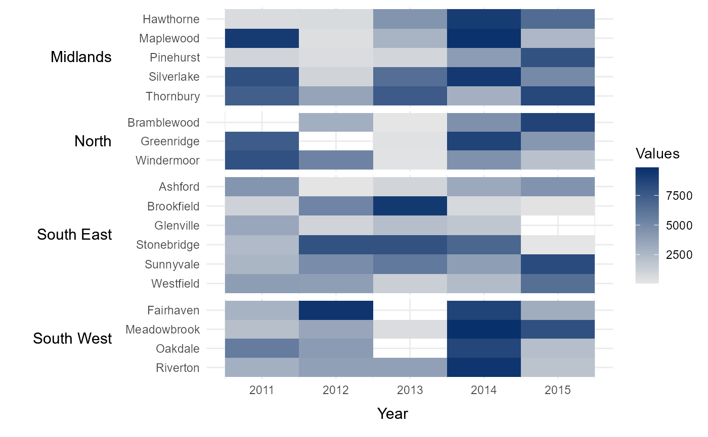
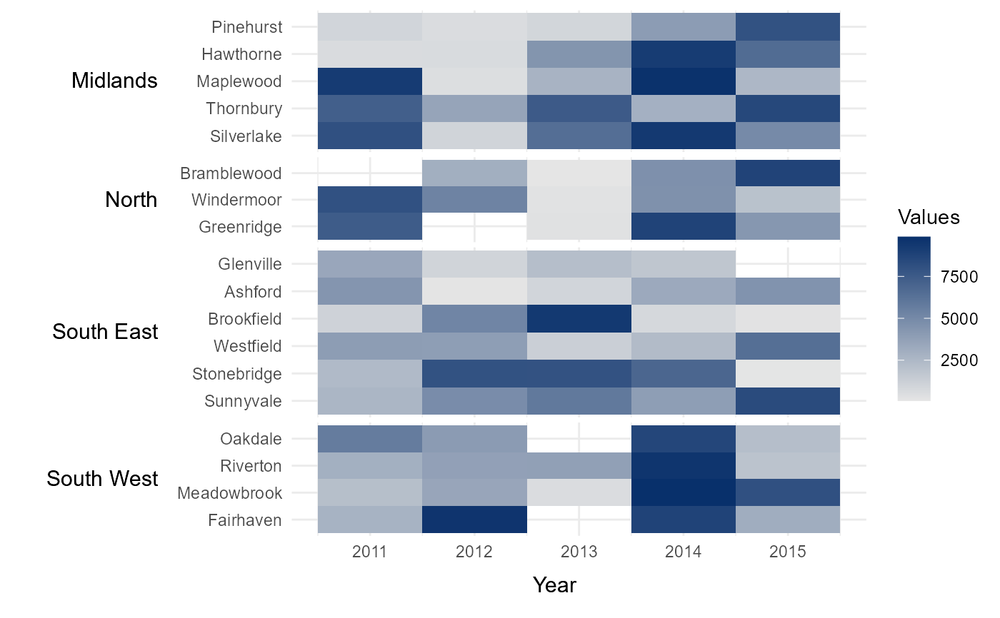
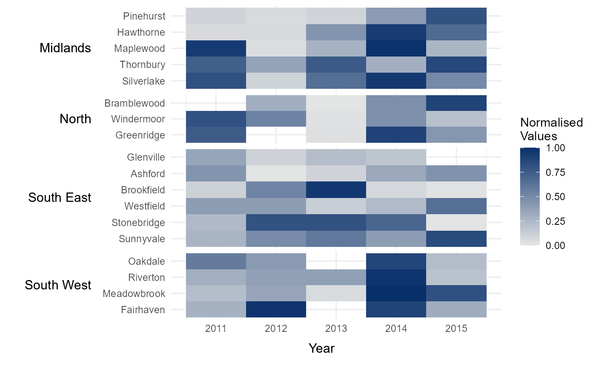
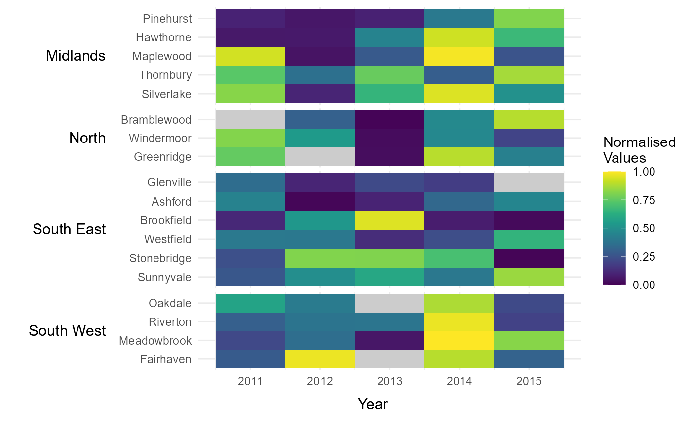
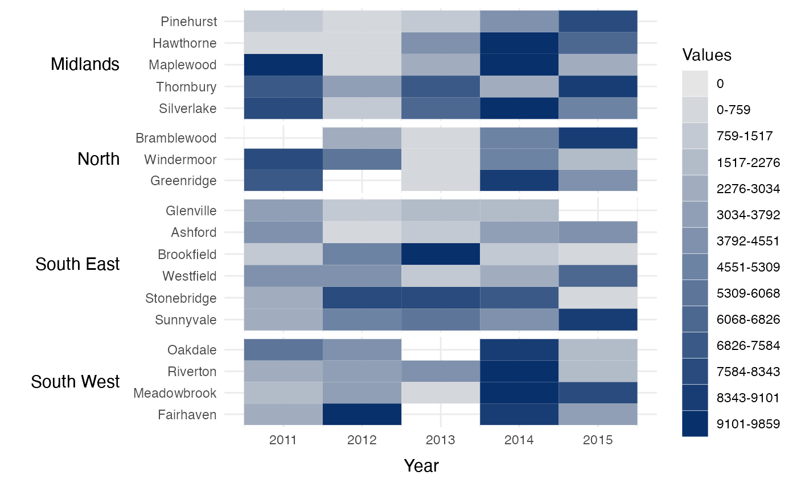
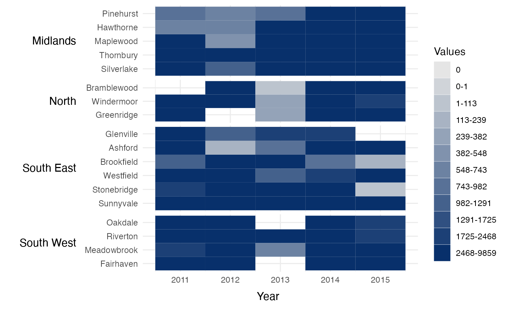
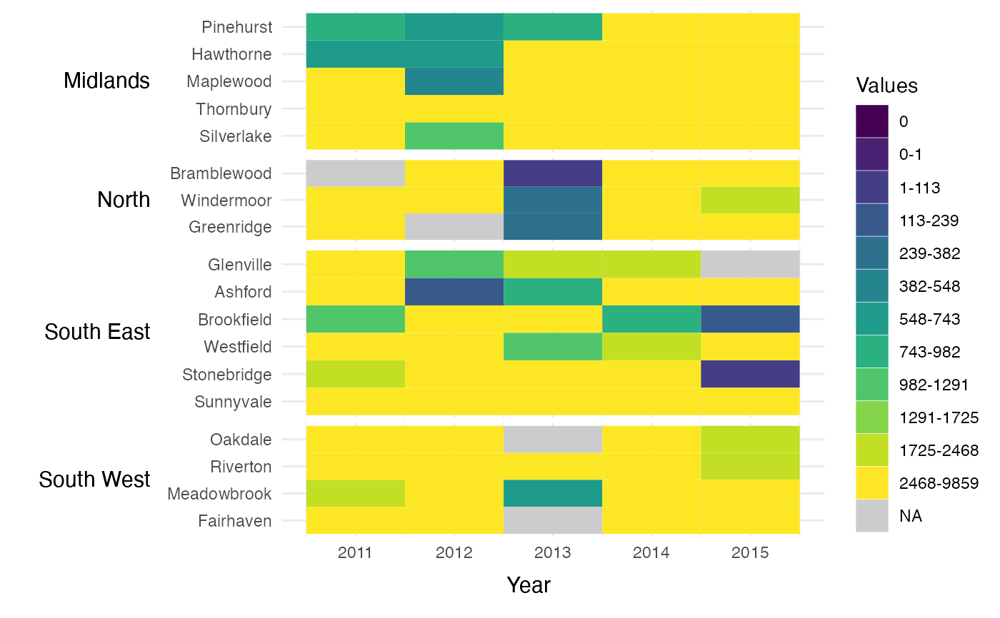
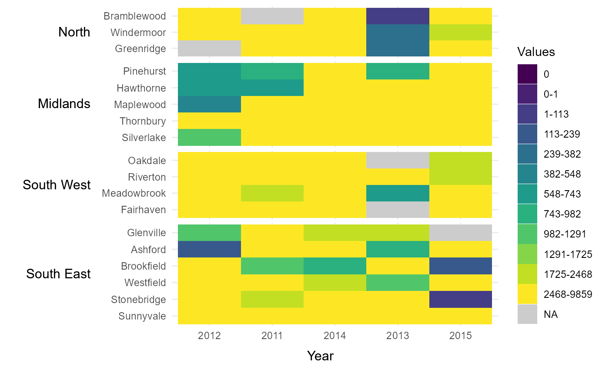

Creates a labelled time-series heatmap from heirarchical data. This function is useful if you wish to create a time-series heatmap where the categories shown on the y axis can be grouped in some way. This heatmap will order the categories by their assigned group and present both the categories and group labels along the y-axis. An example might be series of smaller geographies (lower categories) which aggregate into larger geographical regions (upper groups).
tshhm(
df,
lower,
upper,
times,
values,
sort_lower = "alphabetical",
lgttl = NULL,
bins = NULL,
cbrks = NULL,
cclrs = NULL,
norm_lgd = F,
lgdps = 0,
na_colour = NULL,
xttl_height = 0.05,
yttl_width = 0.15
)A data.frame with containing values with which to populate the heatmap. The data.frame must include columns specifying the lower categories (`lower`) and upper groups (`upper`) that each value corresponds to. These categories and groups will be used to arrange and label the rows of the heatmap. `df` must also contain a `values` variable, containing the values used to populate the heatmap, and a `times` variable, containing the time period during which each value was observed. Note that the groups in `upper` will by default be arranged alphabetically (top to bottom). The ordering of the groups can be manually specified by converting `upper` to a factor. In this case, the groups will be ordered based on the ordering of the factor levels. The ordering of rows within each group can also be specified using the `sort_lower` variable.
A column in `df` containing the categories that will be presented as rows along the y-axis of the heatmap.
A column in `df` containing the groupings that will be used to arrange the heatmap rows.
A column in `df` containing the time-period during which each each value in `values` was observed.
A column in `df` containing the values used to populate the heatmap.
Option to define how rows (lower) within each group (upper) are ordered. The default option is `alphabetical`, which orders rows in alphabetical order from top to bottom. Other options include `sum_ascend` and `mean_ascend`, which order rows in ascending order (top to bottom) based on the row totals and row means respectively. This order can be reversed with the options `sum_descend` and `mean_descend`.
Option to manually define legend title.
Option to break the data into a specified number of groups (defaults to `NULL`). The thresholds between these groups will be equally spaced between the minimum and maximum values observed in `values`.
Vector of custom breaks, if users wish to use a discrete legend colour scheme (defaults to `NULL`). For example, a supplied vector of `c(5,10, 20)` would break he values up into 5 ordered groups of ranges 0, 0-5, 5-10, 10-20 and 20+.
Vector of hexcodes, which to create a custom legend colour scheme (defaults to `NULL`). If `cbrks` is supplied, `cclrs` must have a length two longer than `cbrks`. If `bins` is supplied, `cclrs` must have a length equal to the values provided to `bins`.
Normalised to between 0 and 1 in legend (defaults to `FALSE`). Allows for consistency when comparing heatmaps across different datasets. At present, this only works if all heatmap values are positive.
If using custom breaks, define the number of decimal points to round the legend scale to (defaults to 0). If `norm_lgd` is `TRUE`, it will default to 3.
Option to define the colour of NA values in the legend (defaults to `NULL`, meaning NA values will be assigned no colour).
The space allocated to the title on the x-axis as a proportion of the heatmap's height (defaults to 0.05).
The space allocated to the group titles on the y-axis as a proportion of the heatmap's width (defaults to 0.15).
A ggplot object containing the final heatmap.
library(dplyr)
# Import toy demonstration dataset (see `?example_time_series` for see details)
data(example_time_series)
# Intial heatmap
time_series_heatmap = tshhm(df = example_time_series,
lower = "County",
upper = "Region",
times = "Year",
values = "Immigration",
yttl_width = 0.25)
# View result
time_series_heatmap

# Arrange counties within each region by total number of immigrants
# across all five years (ascending from top to bottom)
sort_ascending = tshhm(df = example_time_series,
lower = "County",
upper = "Region",
times = "Year",
values = "Immigration",
sort_lower = "sum_ascend",
yttl_width = 0.25)
# View result
sort_ascending

# Nomalise the legend
normalised_lgd = tshhm(df = example_time_series,
lower = "County",
upper = "Region",
times = "Year",
values = "Immigration",
sort_lower = "sum_ascend",
norm_lgd = TRUE,
yttl_width = 0.25)
# View result
normalised_lgd

# Manually define colour scheme for heatmap (uses viridis colour scheme)
viridis_12 = c("#440154FF","#482173FF","#433E85FF","#38598CFF","#2D708EFF","#25858EFF",
"#1E9B8AFF","#2BB07FFF","#51C56AFF","#85D54AFF","#C2DF23FF","#FDE725FF")
# Assign continuous colour scheme
cont_clrs = tshhm(df = example_time_series,
lower = "County",
upper = "Region",
times = "Year",
values = "Immigration",
sort_lower = "sum_ascend",
norm_lgd = TRUE,
cclrs = viridis_12,
yttl_width = 0.25)
# View result
cont_clrs
# Assign colour for NA values
na_clrs = tshhm(df = example_time_series,
lower = "County",
upper = "Region",
times = "Year",
values = "Immigration",
sort_lower = "sum_ascend",
norm_lgd = TRUE,
cclrs = viridis_12,
na_colour = "grey80",
yttl_width = 0.25)
# View result
na_clrs

# Break legends into a specified number of bins
# (of equal intervals between 0 and the maximum value in `values`)
bins_15 = tshhm(df = example_time_series,
lower = "County",
upper = "Region",
times = "Year",
values = "Immigration",
sort_lower = "sum_ascend",
bins = 15,
yttl_width = 0.25)
# View result
bins_15

# Manually break data into categories using user-specified intervals.
# In this instance, the `hhmR` function `log_seq` has been used to create a
# vector of logarithmicly increasing values between 1 and the maximum value
# in the dataset.
cbrks = log_seq(example_time_series %>% .$Immigration %>% max(na.rm = TRUE),
12, rmv_extremes = TRUE)
# Manually assign legend categories
legend_cats = tshhm(df = example_time_series,
lower = "County",
upper = "Region",
times = "Year",
values = "Immigration",
sort_lower = "sum_ascend",
cbrks = cbrks,
yttl_width = 0.25)
# View result
legend_cats

# Manually assign colours to legend categories
cat_clrs = tshhm(df = example_time_series,
lower = "County",
upper = "Region",
times = "Year",
values = "Immigration",
sort_lower = "sum_ascend",
cbrks = cbrks,
cclrs = viridis_12,
na_colour = "grey80",
yttl_width = 0.25)
# View result
cat_clrs

# Manually define order of x-axis and groups using factor levels
new_time_series = example_time_series %>%
mutate(Year = factor(Year,
levels = c(2012,2011,2014,
2013,2015)),
Region = factor(Region,
levels = c("North","Midlands",
"South West",
"South East")))
# Manually define order of x-axis and groups
rearrange_axes = tshhm(df = new_time_series,
lower = "County",
upper = "Region",
times = "Year",
values = "Immigration",
sort_lower = "sum_ascend",
cbrks = cbrks,
cclrs = viridis_12,
na_colour = "grey80",
yttl_width = 0.25)
# View result
rearrange_axes
